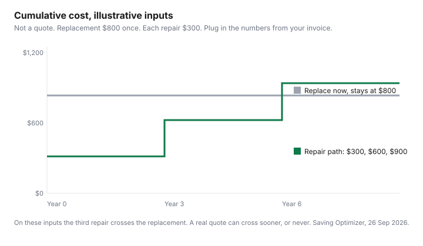

Household Items and Supplies · Canada
Repair or Replace? A Canadian Cost Framework for Appliances, Vacuums, and Electronics
A repair quote feels like a verdict because it arrives as one number, in the kitchen, with the fridge already warm. The replacement price is a different number, on a different day, in a different store. The decision is those two numbers on the same page, plus the warranty you have not checked, plus whether a part exists. This is that page. It is education, not a legal opinion and not a quote.
No Canadian repair-invoice survey was opened on 26 Sep 2026, so this guide does not print a "typical" service call. The table is a worksheet. The ages that are printed are Quebec's legal warranty of good working order, from the Office de la protection du consommateur page last updated 16 Sep 2026, for goods bought or leased new from a merchant and delivered on or after 5 Oct 2026. They are not a national scrap date. When you do replace, read the EnerGuide label before the sticker price decides.
Key takeaways
- The 50 percent test: repair quote compared with half the replacement you would buy. It is a household rule of thumb. It was not found as a statute on the pages opened for this draft.
- Check the manufacturer warranty, then the card certificate if you think a card benefit applies. This page does not rank cards. In Quebec, a separate legal warranty of good working order starts for listed new appliances delivered on or after 5 Oct 2026.
- Bill C-244 received royal assent on 7 Nov 2024. It is a Copyright Act exception for circumventing a lock to diagnose, maintain, or repair. It does not require a manufacturer to sell parts.
- Bill C-267 was at committee in the House of Commons on the LEGISinfo page checked 26 Sep 2026, after second reading on 17 Jun 2026. Ontario Bill 187's OLA page showed first reading on 16 Apr 2024 and an order for second reading. Neither is treated here as law in force.
- The chart uses illustrative inputs, $800 to replace and $300 a repair, so you can see a third repair cross the replacement. Put your quote on the worksheet. Do not put $800 in the family budget.
The 50% rule and age-based rules of thumb by appliance
Write the replacement price first. It is the machine you would buy this month, delivered, not the one in a memory of a sale. Half of that price is the line. A quote under the line passes the 50 percent test. A quote on or over the line fails it. Then apply the overrides, which are not arithmetic. A safety fault you cannot confirm is fixed, a part the shop says is unavailable, or a second failure you already paid for this year, can make a "cheap" repair a down payment on the replacement. A simple, known part on a machine you otherwise trust can make a quote over the line still rational. The test is there so the quote is not the only number in the room.
Age is the other rumour. "Ten years is too old" was not on a page opened for this guide, so it is not repeated as a fact. The sourced ages are Quebec's, and they run the other direction: they are years during which a covered new appliance's failure is the merchant's or the manufacturer's problem, not a suggestion to scrap the machine when the year ends. From the OPC page, for goods purchased or leased new from a merchant, delivered on or after 5 Oct 2026, the warranty of good working order is six years for a range, refrigerator, freezer, air conditioner, or heat pump; five years for a washer, dryer, or dishwasher; four years for a television; and three years for a laptop, desktop computer, game console, cellphone, or tablet. The clock starts at delivery. The warranty transfers to a later consumer. A vacuum cleaner is not in that table. A vacuum uses the worksheet only.
Outside Quebec, this draft found no equivalent national duration. Use the quote, the half-price line, and the manual. Provincial rules differ. If you are not in Quebec, do not import the six-year fridge figure as a repair entitlement. Read your province's consumer-protection page before you tell a shop the law requires a free repair.
Typical Canadian repair call costs vs replacement prices (table)
There is no column of national repair prices, because none was verified. Fill the quote from the invoice in front of you and the replacement from a current tag, including delivery and the haul-away if you will pay it. The 50 percent column is half the replacement, calculated by you. The Quebec column is the legal-warranty length for that category when the good is new and delivered on or after 5 Oct 2026. It is blank where the OPC table does not list the product. A pass on the 50 percent test does not mean the Quebec warranty applies, and a Quebec warranty year does not mean you skip the exclusions for abuse and normal maintenance.
| Item | Your age and symptoms | Quote in hand | Replacement you would buy | 50 percent of that replacement | Quebec legal warranty, if the good qualifies |
|---|---|---|---|---|---|
| Refrigerator or freezer | Write it | Write it | Write it | Half of the replacement | 6 years |
| Range | Write it | Write it | Write it | Half of the replacement | 6 years |
| Washer | Write it | Write it | Write it | Half of the replacement | 5 years |
| Dryer | Write it | Write it | Write it | Half of the replacement | 5 years |
| Dishwasher | Write it | Write it | Write it | Half of the replacement | 5 years |
| Vacuum | Write it | Write it | Write it | Half of the replacement | Not listed on the OPC table opened |
| Television | Write it | Write it | Write it | Half of the replacement | 4 years |
| Laptop | Write it | Write it | Write it | Half of the replacement | 3 years. A desktop, console, phone, or tablet is also 3 years on that page. |
A dryer quote is also an energy question if the replacement would be a heat-pump dryer. That math is the dryer guide. Do not mix a repair invoice with a ten-year electricity guess on this worksheet. Finish the repair-or-replace test first.
Warranty checks first: manufacturer, card, Québec legal warranty
Before you accept a paid repair, read the manufacturer paperwork for the end date and what it excludes. A shop that wants to start today can still start after you have checked. If you paid with a card and you think a purchase-protection or extended-warranty benefit applies, open the certificate for that card. This guide does not rank cards and does not state a day count for a benefit that lives in a certificate. If the certificate does not list the appliance, the benefit is not there.
Quebec's legal warranty of good working order is additional to other legal warranties, which the OPC says can apply during and after it. For a covered failure you choose the merchant or the manufacturer. A merchant cannot force you to the manufacturer, or the reverse. You show that the good stopped working properly during the covered period. The warranty includes parts, labour, and reasonable transport or shipping. It excludes damage from abusive use, and it excludes normal maintenance and the parts that maintenance replaces. The OPC examples are a washer tub damaged by an object that does not belong in a washer, and a heat-pump filter replaced in ordinary upkeep. If the merchant or manufacturer refuses a warranty that should apply, the OPC page says you can send a demand letter and file a complaint. The contact path is on the OPC site. This paragraph is a map to that page, not a filing strategy.
Costco's membership conditions, dated 1 Aug 2026 on the page opened 26 Sep 2026, include a Quebec-only notice: Costco does not guarantee the availability of replacement parts, repair services, or information needed to maintain or repair goods, citing section 39.2 of the Consumer Protection Act. A satisfaction guarantee on merchandise, with the exceptions printed in those conditions, is not the same sentence as a promise that a part will exist in year five. Read both. Major electronics and appliances also sit in Costco's 90-day return category on that page, which is a return window, not a repair program.
Finding parts and manuals in Canada; what right-to-repair law does and doesn't do yet
The practical path is still the boring one. Model number off the frame, not off your memory. Manufacturer support page for the manual and the parts diagram. A local shop that will say, in writing, whether the part is available before you pay a diagnostic you did not agree to. If the manual is behind a lock on the machine itself, Bill C-244 is the federal change that is actually law. Statutes of Canada 2024, chapter 26, assented to 7 Nov 2024, amends the Copyright Act so that the prohibition on circumventing a technological protection measure does not apply when the circumvention is solely to maintain or repair a product, including related diagnosing, where the work the measure controls is part of the product. The exception covers a person doing that for someone else. It does not apply if the person infringes copyright. Nothing in the text opened here orders a manufacturer to stock a board, sell a schematic, or keep a phone line open.
Bill C-267, the National Framework on the Durability of Electronic Products and Essential Home Appliances Act, is a private member's bill. LEGISinfo, checked 26 Sep 2026, lists first reading on 11 Mar 2026 and second reading with referral to the Standing Committee on Industry and Technology on 17 Jun 2026. The recorded vote that day was 192 yeas, 131 nays, and 14 paired. Report stage and third reading had not been reached. The bill, if it passed, would require the Minister of Industry to develop a framework on durability and repairability, including parts and documentation, in consultation with provinces. A framework that does not exist yet is not a part you can order. Do not tell a shop that C-267 already changed their obligation.
Ontario Bill 187, the Right to Repair Act for consumer electronics, household appliances, wheelchairs, motor vehicles, and farming equipment, is a 2024 private member's bill. The Legislative Assembly of Ontario page opened 26 Sep 2026 shows first reading carried on 16 Apr 2024 and the bill ordered for second reading. It would come into force on a day named by proclamation. The page did not show royal assent. The text would require manufacturers to make repair manuals, parts, software, and tools available, with the manual at no charge unless a paper copy is requested at a reasonable cost. Until that is law, an Ontario shop is not operating under that part of the Consumer Protection Act, 2023. Watch the OLA page rather than a summary that says "Ontario passed right to repair."
Maintenance that extends life (filters, coils, seals)
The manual names the intervals. A filter the book says to wash or replace is the first thing to do before you call a truck, because a choked filter looks like a dying machine. Quebec's warranty page is explicit that normal maintenance is not the legal warranty. Doing the maintenance is how you stay out of the exclusion, not how you create a claim. Coils that the manual says to vacuum, and door seals that the manual says to wipe and inspect, are the same category. This guide does not add a day count on top of the book. If the book is silent, the manufacturer’s support page is the next place, not a forum.
Write the dates down. A sinking fund for the machine you know is aging belongs with the other irregular bills. The method is the sinking-fund guide. A home inventory, with model and serial numbers, is what you want if a loss becomes an insurance claim. That checklist is the home inventory guide. Neither document repairs the fridge. Both keep the decision from being made in a panic.
Decision flowchart and SVG cost-over-time chart
- Is it unsafe to keep using? Stop. Do not run a 50 percent test on a hazard. Get it made safe or replace it.
- Is a manufacturer warranty, a card certificate you have read, or Quebec's legal warranty of good working order still in play? Use that path before you pay.
- Is the part available? If the answer is no, the quote is a conversation, not a repair.
- Write the replacement price. Halve it. Put the quote beside it.
- Under half, and the machine is otherwise fine: repair is the test's answer. On or over half: replace, unless you have a specific reason you can say out loud.
- If you replace, read the EnerGuide label and the delivery fee. If you repair, book the manual's next maintenance date the same week.
The chart is the same test over time, with made-up dollars so the shape is visible. Replacement is $800 at the start and stays $800 in the illustration, which assumes you do not buy again inside the window. Repair is $300 now, another $300 in year 3, and another $300 in year 6. Cumulative repair is $300, then $600, then $900. The third repair crosses the replacement. Your invoice will not be these numbers. If your quote is $150 and a replacement is $900, you are not in this picture. Draw your own steps. The picture is only here so "one more repair" has a place to land.

Sources & date stamps
- Office de la protection du consommateur, legal warranty of good working order for certain appliances and electronics, page last updated 16 Sep 2026, opened 26 Sep 2026. New goods bought or leased from a merchant, delivered on or after 5 Oct 2026. Durations: 6, 5, 4, and 3 years as in the table. Parts, labour, reasonable transport. Excludes abuse and normal maintenance. Merchant or manufacturer, at the consumer's choice.
- Parliament of Canada, Bill C-244, Statutes of Canada 2024, chapter 26, assented to 7 Nov 2024. Copyright Act exception for circumventing a technological protection measure solely for diagnosis, maintenance, or repair.
- LEGISinfo, Bill C-267, 45th Parliament, 1st session, opened 26 Sep 2026. Status: at consideration in committee in the House of Commons. First reading 11 Mar 2026. Second reading and referral to INDU 17 Jun 2026. Vote 192 yeas, 131 nays, 14 paired. Not law.
- Legislative Assembly of Ontario, Bill 187, page opened 26 Sep 2026. First reading 16 Apr 2024, ordered for second reading. Commencement on proclamation. Not shown as assented.
- Costco membership conditions and regulations, document dated 1 Aug 2026, opened 26 Sep 2026. Quebec notice on replacement parts under section 39.2 of the Consumer Protection Act. Ninety-day return category for listed electronics and major appliances. No national repair-price survey was opened.
Frequently asked questions
What is the 50 percent rule for appliance repair?
It is a household test, not a statute found on the pages opened for this guide. Compare the repair quote with half the price of a replacement you would actually buy. If the quote is at or over that half, the test says replace. If it is under, the test says look hard at repair. A second likely failure, a missing part, or a safety fault can override the arithmetic.
How old is too old to repair a fridge or washer?
No national age cutoff was on the pages opened 26 Sep 2026. In Quebec, the Office de la protection du consommateur describes a legal warranty of good working order for certain new appliances delivered on or after 5 Oct 2026: six years for a range, refrigerator, freezer, air conditioner, or heat pump, and five years for a washer, dryer, or dishwasher. That is a repair right under those rules, not a date after which repair is foolish. Outside Quebec, use the quote and the 50 percent test.
Where can I find parts and manuals in Canada?
Start with the manufacturer’s support page and the paperwork that came with the appliance. Bill C-244, assented to 7 Nov 2024, is a Copyright Act exception for bypassing a technological protection measure solely to diagnose, maintain, or repair. It does not order a company to sell you the part. Bill C-267 and Ontario Bill 187, as checked 26 Sep 2026, are not law.
What does Canada's right-to-repair law actually do?
The law in force, on the Parliament of Canada text opened for this guide, is Bill C-244. It lets a person circumvent a technological protection measure for the sole purpose of maintaining or repairing a product, including diagnosing, and it can be done for someone else. The exception does not apply if the person infringes copyright. It is not a parts mandate. Bill C-267, a proposed national durability framework, was in committee in the House of Commons on the LEGISinfo page checked 26 Sep 2026.
What maintenance makes appliances last longer?
The manual’s interval for filters, coils, and door seals is the list. Quebec’s legal-warranty page, updated 16 Sep 2026, says normal maintenance and the parts that maintenance uses are excluded. The example on that page is a heat-pump filter. Skipping the filter is not a warranty strategy. This guide does not invent a day count the manual does not print.